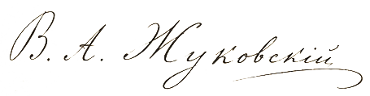

Милостивый государь Аристарх Петрович!
Отчёт учёного немца, в краях Ваших гостящего, надписанный мне в собственные руки, дошёл до меня прежде, нежели чернила на нём успели привлечь взоры людей в голубых мундирах. Имя Ваше поименовано в нём первооткрывателем чуда – и тем Вы ступили на край бездны, любезный друг. В нынешнее время значиться при «небесных феноменах», будучи на замечании у здешнего начальства, есть верный способ окончить дни свои в каземате, ибо жандармы во всём видят лишь заговоры иллюминатов.
Однако ж, Провидение явило Вам милость. Малый предмет, в пакет учёного вложенный, был мною со всею осторожностью представлен Его Высочеству Цесаревичу Александру Николаевичу. Юная душа Наследника исполнилась благоговейного трепета перед сим чудом Творца. С его сыновнего соизволения вещь сия вчера предстала пред очи Государыни Императрицы, будто по Провидению задержавшейся с отъездом в Крым.
Августейшая наша покровительница была заворожена небесным сиянием камня и изволила усмотреть в нём знак милости Божией к Царствующему Дому. Государь Император, уведомлённый супругою о сём «кабинетном курьёзе», изволил лично осмотреть вещь и, хотя остался в глубоком раздумье, гнева не проявил, но повелел все прочие предметы немедленно доставить в Санкт-Петербург, в Зимний дворец.
Посему заклинаю Вас: когда к Вам явятся – не чините препятствий, отдайте всё до последнего осколка. Вы спасены. Имя Ваше теперь известно в высочайших сферах не как смутьяна, но как открывателя царских редкостей. Однако ж, умоляю, держите язык за зубами. Граф Бенкендорф весьма раздосадован, что сие дело пошло в обход его канцелярии, и будет искать любого повода уличить Вас в ином грехе.
Ваш покорный слуга и доброжелатель,
